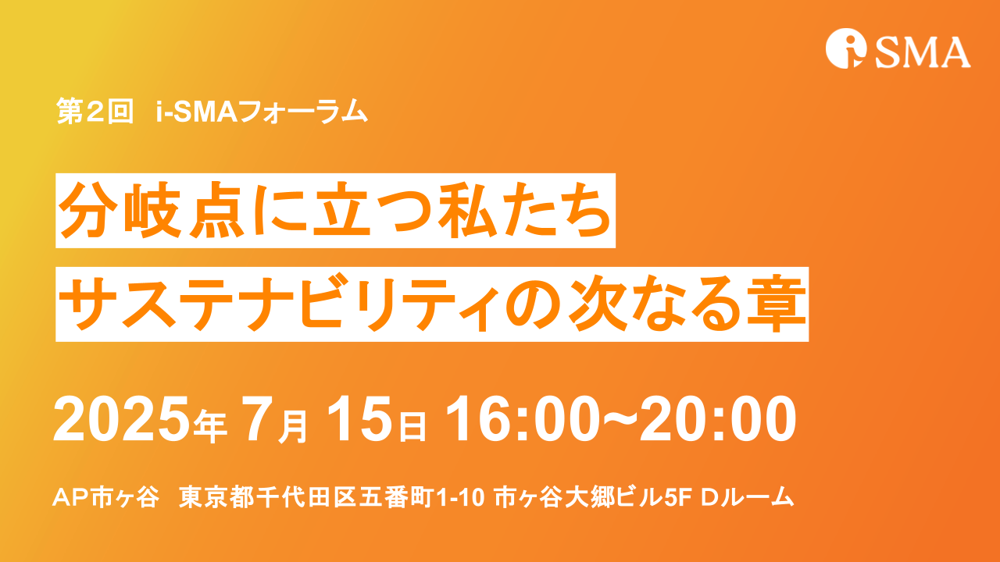

- 開催日
- 2025.07.15
- 時間
- 16:00〜19:45
- 形式
- 対面
- カテゴリ
- フォーラム
地政学的緊張と環境政策の変化を踏まえ、サステナビリティの本質と次なる実践を探るフォーラム。基調講演3件・パネルディスカッション2件・懇親会を実施しました。

- 会場
- AP市ヶ谷（東京都千代田区五番町1-10 市ヶ谷大郷ビル5F Dルーム）
- 定員
- 100名
- 参加費
- 会員：2,000円／非会員：7,000円
プログラム
第1部（16:00〜18:30）基調講演・パネルディスカッション
- 開会挨拶：高橋義明
- 基調講演3件：サステナブルファイナンス、脱炭素ビジネス、社会の岐路
- パネル①「企業と投資家の視点」
- パネル②「インパクトファイナンス」
主要登壇者：池田賢志（前金融庁）、杉井威夫（環境省）、水口剛（高崎経済大学学長・i-SMA理事長）、星和恵（不二製油）、阿由葉真司（三井住友トラスト）、高塚清佳（インパクト・キャピタル）ほか
第2部（18:30〜19:45）ネットワーキングイベント
フォーラムは盛況のうちに終了いたしました。ご登壇いただいた皆様、ご参加いただいた全ての皆様に、心より御礼申し上げます。今後もi-SMAは、サステナビリティマネジメント＆アシュアランスの普及・発展に向けた活動を継続してまいります。